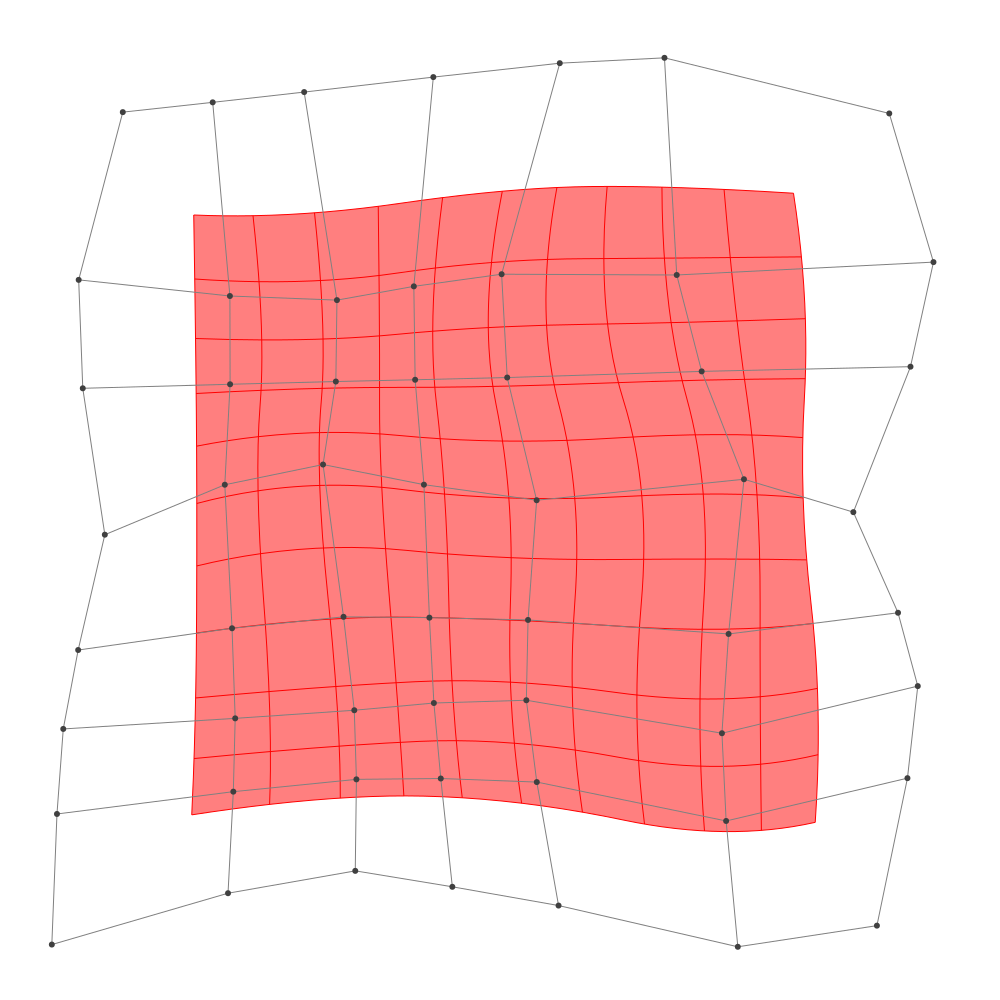
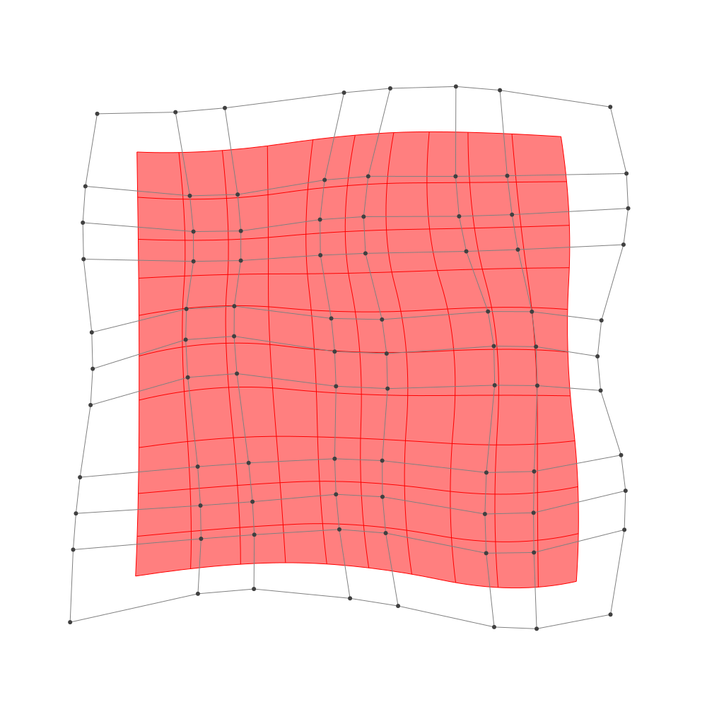

Refinement
BasicBSpline.refinement — FunctionRefinement of B-spline manifold with given B-spline spaces.
julia> p = 2 # degree of polynomial2julia> k = KnotVector(1:8) # knot vectorKnotVector([1.0, 2.0, 3.0, 4.0, 5.0, 6.0, 7.0, 8.0])julia> P = BSplineSpace{p}(k) # B-spline spaceBSplineSpace{2, Float64}(KnotVector([1.0, 2.0, 3.0, 4.0, 5.0, 6.0, 7.0, 8.0]))julia> rand_a = [SVector(rand(), rand()) for i in 1:dim(P), j in 1:dim(P)]5×5 Matrix{StaticArrays.SVector{2, Float64}}: [0.210056, 0.55805] [0.814365, 0.115651] … [0.0522946, 0.772244] [0.0858425, 0.634452] [0.990052, 0.102034] [0.908561, 0.79999] [0.318448, 0.384718] [0.839004, 0.490061] [0.0474009, 0.326227] [0.198719, 0.683998] [0.685089, 0.776151] [0.464962, 0.841256] [0.710353, 0.00307258] [0.882356, 0.278268] [0.594956, 0.580173]julia> a = [SVector(2*i-6.5, 2*j-6.5) for i in 1:dim(P), j in 1:dim(P)] + rand_a # random5×5 Matrix{StaticArrays.SVector{2, Float64}}: [-4.28994, -3.94195] [-3.68563, -2.38435] … [-4.44771, 4.27224] [-2.41416, -3.86555] [-1.50995, -2.39797] [-1.59144, 4.29999] [-0.181552, -4.11528] [0.339004, -2.00994] [-0.452599, 3.82623] [1.69872, -3.816] [2.18509, -1.72385] [1.96496, 4.34126] [4.21035, -4.49693] [4.38236, -2.22173] [4.09496, 4.08017]julia> M = BSplineManifold(a,(P,P)) # Define B-spline manifoldBSplineManifold{2, (2, 2), StaticArrays.SVector{2, Float64}, Tuple{BSplineSpace{2, Float64}, BSplineSpace{2, Float64}}}((BSplineSpace{2, Float64}(KnotVector([1.0, 2.0, 3.0, 4.0, 5.0, 6.0, 7.0, 8.0])), BSplineSpace{2, Float64}(KnotVector([1.0, 2.0, 3.0, 4.0, 5.0, 6.0, 7.0, 8.0]))), StaticArrays.SVector{2, Float64}[[-4.289943593318067, -3.941949855920323] [-3.685634752772188, -2.384348504905624] … [-4.251357455156251, 1.7247230616696325] [-4.447705404167312, 4.272244301802029]; [-2.41415753553742, -3.8655477782774628] [-1.5099483027166163, -2.397965788946549] … [-1.673401071498909, 2.4519401719517857] [-1.591439039806016, 4.2999899786816]; … ; [1.6987193720347724, -3.816002076402749] [2.185089223760187, -1.7238489579029372] … [2.1971506529870592, 1.677666869064263] [1.9649618723536233, 4.341255788974]; [4.210353404592548, -4.496927415475456] [4.382356465429518, -2.2217318963777277] … [4.415555290981103, 1.724069983492254] [4.09495622284311, 4.0801732564525155]])
h-refinemnet
Insert additional knots to knot vector.
julia> k₊=(KnotVector(3.3,4.2),KnotVector(3.8,3.2,5.3)) # additional knotvectors(KnotVector([3.3, 4.2]), KnotVector([3.2, 3.8, 5.3]))julia> M_h = refinement(M,k₊=k₊) # refinement of B-spline manifoldBSplineManifold{2, (2, 2), StaticArrays.SVector{2, Float64}, Tuple{BSplineSpace{2, Float64}, BSplineSpace{2, Float64}}}((BSplineSpace{2, Float64}(KnotVector([1.0, 2.0, 3.0, 3.3, 4.0, 4.2, 5.0, 6.0, 7.0, 8.0])), BSplineSpace{2, Float64}(KnotVector([1.0, 2.0, 3.0, 3.2, 3.8, 4.0, 5.0, 5.3, 6.0, 7.0, 8.0]))), StaticArrays.SVector{2, Float64}[[-4.289943593318067, -3.941949855920323] [-3.92735828899054, -3.0073890453115038] … [-4.28080964750791, 2.106851247689492] [-4.447705404167312, 4.272244301802029]; [-3.0706826557606464, -3.8922885054524636] [-2.5911361984458985, -2.9928352459003205] … [-2.5780027750120023, 2.51134390461614] [-2.59113226733247, 4.29027899177375]; … ; [1.6987193720347724, -3.816002076402749] [1.990541283070021, -2.5607102053028616] … [2.162322335892044, 2.0772052070507234] [1.9649618723536233, 4.341255788974]; [4.210353404592548, -4.496927415475456] [4.31355524109473, -3.131810104016819] … [4.3674654307604035, 2.077485474436293] [4.09495622284311, 4.0801732564525155]])julia> save_png("2dim_h-refinement.png", M_h) # save image

Note that this shape and the last shape are identical.
p-refinemnet
Increase the polynomial degree of B-spline manifold.
julia> p₊=(1,2) # additional degrees(1, 2)julia> M_p = refinement(M,p₊=p₊) # refinement of B-spline manifoldBSplineManifold{2, (3, 4), StaticArrays.SVector{2, Float64}, Tuple{BSplineSpace{3, Float64}, BSplineSpace{4, Float64}}}((BSplineSpace{3, Float64}(KnotVector([1.0, 2.0, 3.0, 3.0, 4.0, 4.0, 5.0, 5.0, 6.0, 6.0, 7.0, 8.0])), BSplineSpace{4, Float64}(KnotVector([1.0, 2.0, 3.0, 3.0, 3.0, 4.0, 4.0, 4.0, 5.0, 5.0, 5.0, 6.0, 6.0, 6.0, 7.0, 8.0]))), StaticArrays.SVector{2, Float64}[[-3.813739523873369, -3.543566645296331] [-3.486593404244184, -2.7722675832626287] … [-3.8591887959367948, 2.453661580357983] [-3.934170272050329, 3.6691329143072995]; [-2.51323208664045, -3.5076351538150545] [-2.0861191695862904, -2.7663425456759474] … [-2.0941662100479075, 2.821894414978988] [-2.076377692593457, 3.804208604460777]; … ; [2.225818890772072, -3.3988245865983346] [2.44280658406074, -2.337494493965268] … [2.505153802181684, 2.338486049490134] [2.381691887906253, 3.6446567055325465]; [3.847847113995849, -3.822267745880487] [3.9600458769883677, -2.6999235197147815] … [3.96935517959362, 2.3181738512838823] [3.816423169483337, 3.5218492916764697]])julia> save_png("2dim_p-refinement.png", M_p) # save image

Note that this shape and the last shape are identical.